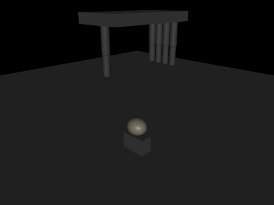
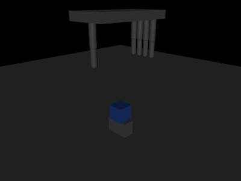

Tactile-less HandOff
Rokoko gloves can't feel. We add a vision-chosen force cushion and record every session as data. Everything below is labelled: proven in simulation, partly proven, or not proven. Nothing here ran on a real robot hand yet.
Egg: with and without the cushion simulation, scripted grip

Full fist, no cushion
Red bar = broken. Toy threshold 3 N.
Same fist, egg profile
Green bar = gripped intact, closure capped at 0.5.

Rigid cube
Control: the same hand lifts a cube.
On 11 real wrist paths (series B), scripted grip: egg broken 10/11 without the cushion, 1/11 with. Break threshold and gains are hand-tuned toy values, not measurements.
Real glove data in the simulator
| Cube, real recordings | Series A | Series B | Series C | Verdict |
|---|---|---|---|---|
| real Coil Pro wrist + real fingers | 0/11 | 0/11 | 0/10 | not proven |
| real Coil Pro wrist + scripted grip | 8/11 | 9/11 | 9/10 | wrist path is usable |
Lifted and held. The object position was not recorded, so it is placed under the hand at the pick moment: the approach is not tested.
Episode judge (NVIDIA Nemotron 3.5 Super VL) recall only
| Prompt | Human-positive episodes judged good | Unclear |
|---|---|---|
| v1: aggregate statistics | 5 / 32 | 16 |
| v2: task definition (no timeline yet; two runs) | 22 / 32 and 25 / 32 (run-to-run noise ~±3) | 0 |
All human labels are "not dropped": no failure examples, so precision is unknown. v2 also calls non-grasp series (calibration, noise) "good". The timeline version is being re-measured. Needs 5-10 labelled failures and camera frames.
What exists / what is next
Sim scene, retargeting (Inspire, G1 Dex3), dashboard with latency + force bar, 61 real episodes, Nemotron picker (text and image) and judge, 42 tests in CI.
Real Inspire hand (registers from Aalto), camera → picker, judge with video frames, Gemini as second judge.
A trained HandOff policy, real-hand grasp, real latency, real egg forces.